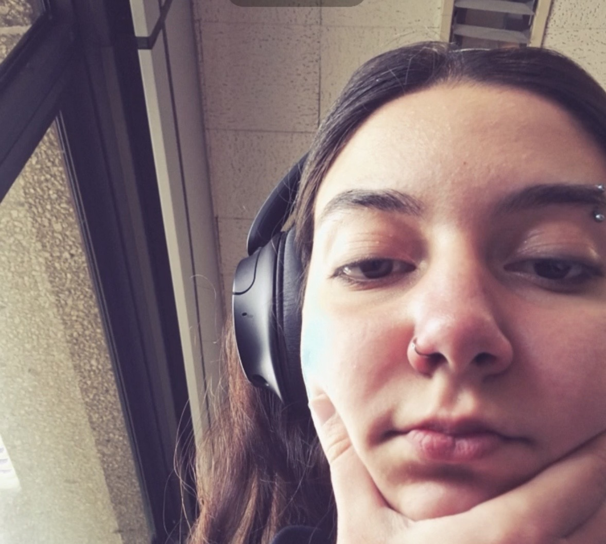
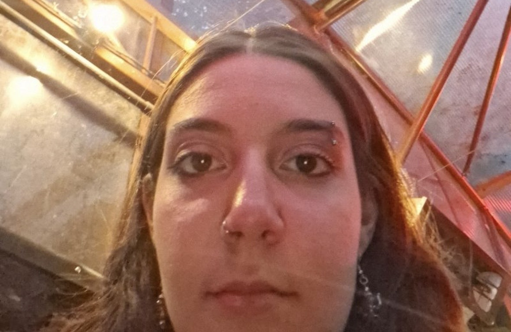
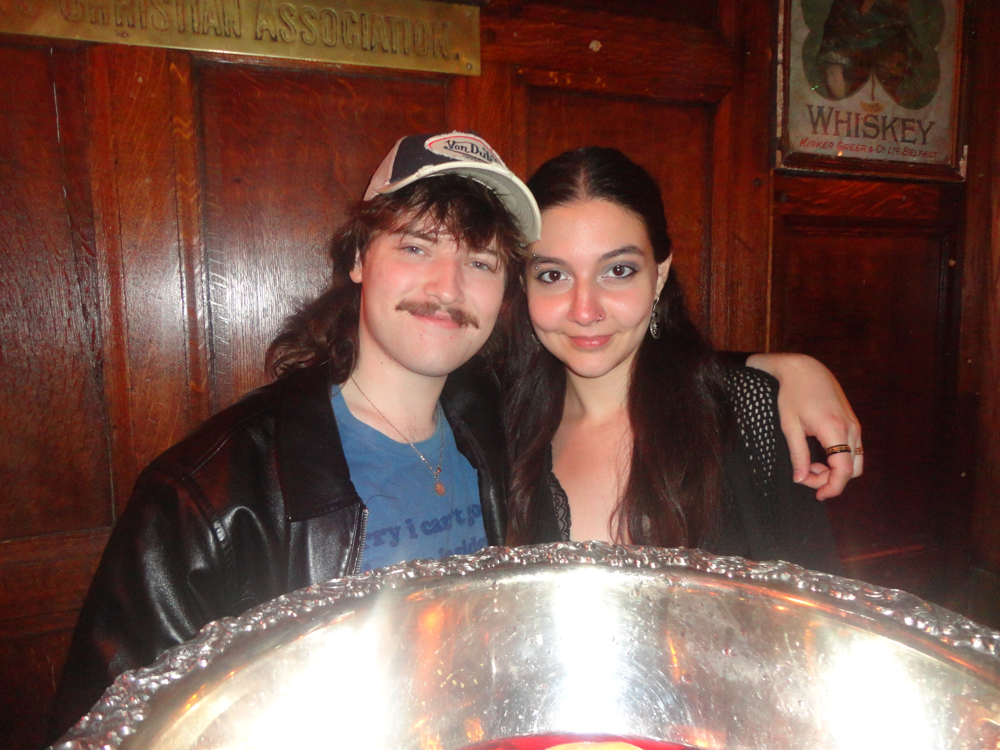

I am too annoying to just buy a card like a normal person so of course I had to spend two hours trying to remote connect to eduroam to make you a website instead. I love you so freaking much in so many ways. You were the first proper friend that I made in college and you are the catalyst for me having the experience in university that I dreamed of my whole life. I am eternally grateful for all of the opportunities I have been offered and people I have met because of you. Every moment of our friendship is so important to me, whether its a genuine and heartfelt conversation, hours spent locked in the library, or laughing like idiots about farts for 20 whole minutes. You are a shining light of a human being who makes everyone in the room feel so heard and cared for, all while making them laugh non stop. the way you carry yourself in your relationships and wider life is so impressive and I really admire you for it. I know its just second nature to you but I genuinely mean it, you are an incredible person and being the individual you are through it all is so inspiring. I don't wanna ramble on for too long but happy birthday my little chud. I am so excited to be able to go into this new decade and chapter of your life with you, I know theres so many memories for us to make together in the next 10 years, both in UCC and beyond. Keep being you and you will go so far in life and in your friendships, I can't wait to stand by your side and watch who you become. BAPC Chuds forever
